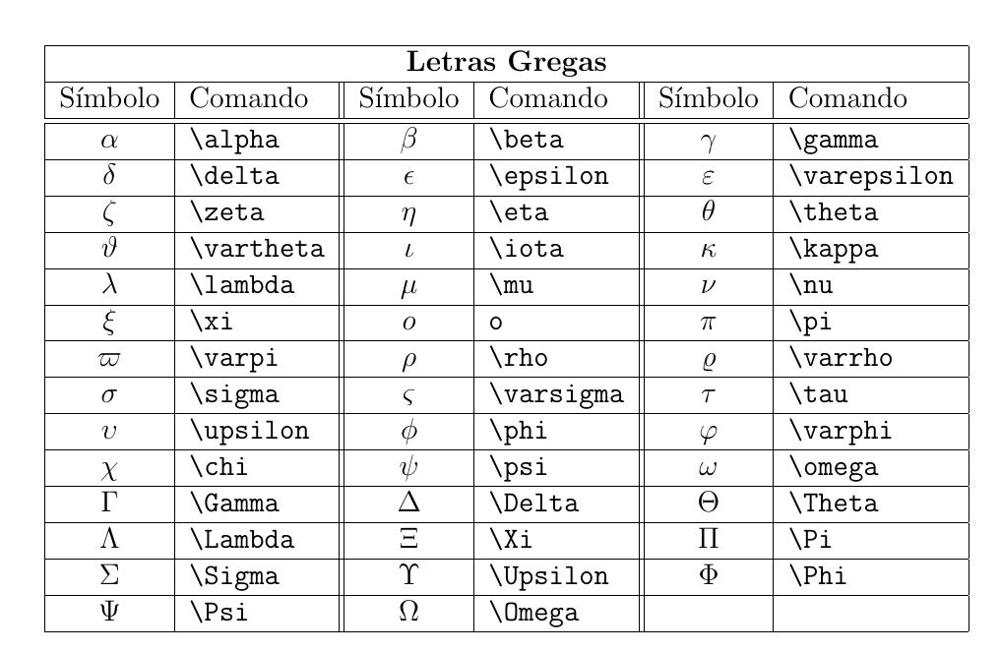
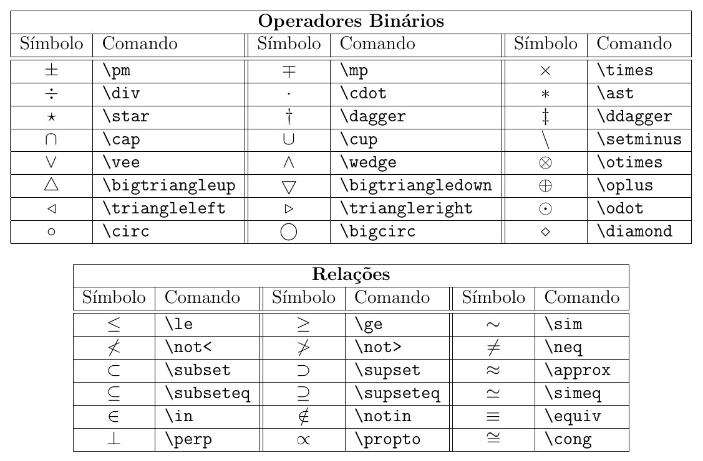
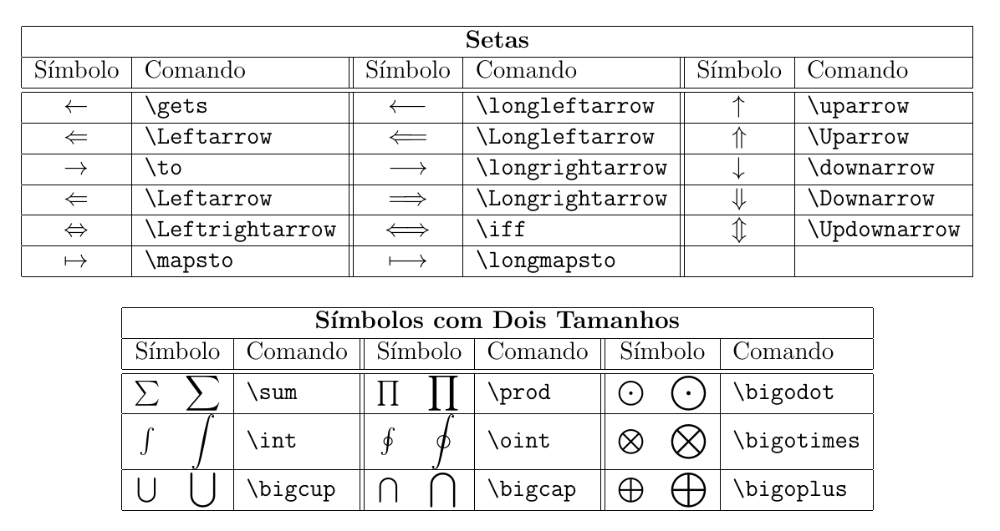
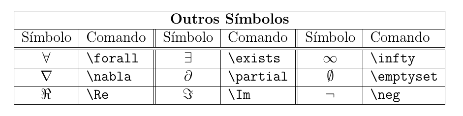

Como escrever equações em documentos técnicos sem complicação?
Ambiente Matemático no 
ESTAT0090 – Estatística Computacional
Prof. Dr. Sadraque E. F. Lucena
sadraquelucena@academico.ufs.br
Cenário
Seu orientador acaba de devolver seu artigo com um alerta:
“As equações estão ilegíveis e amadoras. Corrija URGENTE ou não poderemos submeter ao evento!”
O que deu errado?
Os símbolos estão sobrepostos e as frações mudam aleatoriamente de tamanho ao editar o texto.
A numeração das equações não segue uma sequência e referências no texto apontam para equações que não existem.
O evento exige LaTeX e você usou Word.
Cenário
O Problema
- Equações quebram ao mudar margens ou versões do software.
- Inserir uma nova equação desatualiza a numeração de TODAS as seqguintes.
- Símbolos desproporcionais (ex.: \(\int\) pequeno, frações gigantes)
A Motivação
- Equações sempre perfeitas (mesmo em 50 páginas).
- Numeração automática e sem erros.
- Aceito pelas principais revistas científicas.
Objetivo da aula
Na aula de hoje aprenderemos a criar:
- O ambiente matemático
- Exponentes e índices
- Frações e raízes
- Somatórios e integrais
- Formatação de espaçamento e pontos
- Teoremas
- Símbolos matemáticos
- Funções matemáticas
- Fórmulas com til, barra, chapéu, etc.
O Ambiente Matemático no
O Ambiente Matemático
No LaTeX, as fórmulas matemáticas são inseridas no arquivo fonte por meio de comandos específicos.
É importante informar ao LaTeX quando cmeça e termina uma fórmula para que o processamento seja feito corretamente.
As fórmulas podem ocorrer inline, ou seja, incorporadas em uma linha de texto, como por exemplo \(ax^2 + bx + c = 0\).
Também é possível destacar as fórmulas do texto principal, apresentando-as em uma linha separada, como:
\[x = \frac{-b \pm \sqrt{b^2-4ac}}{2a}\]
O Ambiente Matemático
No LaTeX, o modo matemático é iniciado e terminado com o uso do cifrão (
$) no meio do texto.Por exemplo, \(ax^2+bx+c=0\) pode ser produzida com
$ax^2+bx+c=0$.Quando as fórmulas são destacadas do texto principal, pode-se usar
$$antes e depois da equação, ou\[para iniciar e\]para terminar o modo matemático.
A segunda fórmula no slide anterior foi obtida com:
- Para numerar as fórmulas destacadas, é possível utilizar o ambiente
equationda seguinte forma:
O Ambiente Matemático
Ao digitar espaços dentro das fórmulas, eles são ignorados pelo LaTeX. Para adicionar espaçamento, pode-se utilizar
~ou\quad.Dica: se quiser dar espaço negativo, use
\!.Os símbolos \[ +\quad -\quad =\quad <\quad >\quad /\quad :\quad !\quad [\quad ]\quad (\quad )\quad | \] podem ser digitados diretamente do teclado.
Exemplo: \(|x|<a\) pode ser digitado diretamente como
$|x|<a$.As chaves “
{}” servem para agrupar logicamente partes da fórmula, mas elas não são impressas diretamente.- Se você deseja incluir chaves em uma fórmula, deve-se utilizar
\{e\}para que sejam interpretadas como parte da fórmula.
- Se você deseja incluir chaves em uma fórmula, deve-se utilizar
Expoentes e Índices
- O LaTeX facilita a produção de combinações de expoentes e índices com o tamanho correto.
- O caractere
^indica um expoente e_indica um índice. - Exemplo: \[x^2 \quad a_n \quad x_i^2 \quad x^2_i \quad x^{2n} \quad x^{y^2} \quad x^{y_1}\] é obtido com o código
- Observe que a ordem dos índices e expoentes não importa quando eles ocorrem juntos. Além disso, quando o índice ou expoente possui mais de um caractere, eles devem ser colocados entre chaves.
Atividade
Reproduza no LaTeX o texto abaixo:
Seja \(X\) com distribuição \(U(a,b)\). A função de densidade de probabilidade (PDF) de \(X\) é dada por \[ f(x) = 1/(b-a), \] para \(a< x < b\). A esperança, \(E(X)\), e a variância, \(V(X)\), são respectivamente dadas por: \[ E(X) = (a + b)/2 \quad \text{e} \quad V(X) = (b - a)^2/12. \]
Frações e Raízes
Frações simples podem ser escritas utilizando o caractere
/.- Por exemplo:
$(a+b)/2$, que resulta em \((a + b)/2\).
- Por exemplo:
Para frações mais complexas, você pode usar o comando
\frac{numerador}{denominador}.- Por exemplo:
$\frac{a+b}{2}$.
- Por exemplo:
Para representar raízes, utilize o comando
\sqrt[n]{radicando}.- Por exemplo:
$\sqrt[3]{8}=2$produz \(\sqrt[3]{8}=2\).
- Por exemplo:
Se o argumento opcional
[n]for omitido, a raiz quadrada é gerada. Exemplo:$\sqrt{4}=2$produz \(\sqrt{4}=2\).O tamanho e o comprimento do radical são automaticamente ajustados de acordo com o tamanho do radicando.
Atividade
Reproduza no LaTeX o texto abaixo:
Seja \(X\) com distribuição \(U(a,b)\). A função de densidade de probabilidade (PDF) de \(X\) é dada por \[ \frac{1}{b-a}, \] para \(a< x < b\). A esperança, \(E(X)\), e a variância, \(V(X)\), são respectivamente dadas por: \[ E(X) = \frac{a + b}{2} \quad \text{e} \quad V(X) = \frac{(b - a)^2}{12}. \]
Somatórios e Integrais
Os somatórios e as integrais são operações fundamentais na matemática, frequentemente representados por meio dos comandos
\sume\int. Exemplos:$\sum_{i=1}^n a_i$produz \(\sum_{i=1}^n a_i\).- Podemos destacar um somatório com o uso do comando
\limits, da seguinte forma:\sum\limits_{i=1}^n a_i$produz \(\sum\limits_{i=1}^n a_i\).
Da mesma forma, podemos expressar uma integral:
$\int_a^b f(x) dx$produz \(\int_a^b f(x) dx\).$\int\limits_a^b f(x) dx$produz \(\int\limits_a^b f(x) dx\).
Atividade
Reproduza no LaTeX o texto abaixo:
A função de densidade de probabilidade (pdf) da distribuição exponencial pode ser expressa como: \[ f(x) = a e^{-a x}, \] para \(x\) maior ou igual a zero. A probabilidade de \(X<b\) é calculada como \[ P(X <b) = \int_{0}^{b} a e^{-a x} dx. \]
Coeficientes Binomiais
Os coeficientes binomiais são obtidos com o comando
\chooseou com\binom{}{}.Exemplo:
${a\choose b}$produz \({a\choose b}\)$\binom{a}{b}$produz \(\binom{a}{b}\)
Atividade
Reproduza no LaTeX o texto abaixo:
Seja \(X\) com distribuição Binomial(\(n,p\)). Para calcularmos a probabilidade de \(X=k\), usamos \[ P(X = k) = \binom{n}{k} p^k (1 - p)^{n - k}, \] em que \({n \choose k} = \frac{n!}{k!(n - k)!}.\)
Equações Numeradas
- Para numerar e referenciar equações no LaTeX, usamos o ambiente
equationcom o comando\label{}. - O
\label{}atribui uma “etiqueta” à equação que pode ser referenciada em qualquer parte do texto. - O
\ref{}mostra apenas o número da equação. - O
\eqref{}mostra o número da equação entre parênteses, como é comum em textos científicos. - Exemplo:
Atividade
Reproduza no LaTeX o texto abaixo:
A fórmula de Bhaskara resolve equações do tipo \(ax^2 + bx + c = 0\). A solução é dada por: \[ x = \frac{-b \pm \sqrt{b^2 - 4ac}}{2a} \qquad(1)\] Veja que a Equação (1) depende dos coeficientes \(a\), \(b\) e \(c\).
Formatação de Espaçamento e Pontos
Para inserir três pontos horizontais, use os comandos
\ldotsou\cdots. Exemplos:$a_1+\cdots+a_n$produz \(a_1+\cdots+a_n\)$x_1,\ldots,x_n$produz \(x_1,\ldots,x_n\)
Para inserir três pontos verticais, utilize o comando
\vdots, que produz \(\vdots\)Para usar um único ponto use
\cdot. Exemplo:$x \cdot y$produz \(x \cdot y\)
Formatação de Espaçamento e Pontos
O comando
\quadproduz um espaço médio.O comando
\qquadproduz um espaço maiorO comando
\,dá um pequeno espaço.O comando
\:dá um espaço médio.O comando
\;dá um espaço grande.O comando
\!dá um espaço negativo (backspace).Se você precisar incluir texto no meio das fórmulas matemáticas, o comando
\mbox{texto}ou\text{texto}pode ser usado. Exemplo:$IMC = \frac{\text{altura}}{\text{peso}^2}$produz \(IMC = \frac{\text{altura}}{\text{peso}^2}\)
Atividade
Reproduza no LaTeX:
\[ x_1=\frac{-b-\sqrt{b^2-4ac}}{2a}\quad\mbox{e}\quad x_2=\frac{-b+\sqrt{b^2-4ac}}{2a}. \]
Teoremas
Um texto matemático frequentemente inclui teoremas, proposições e outros tipos de estruturas. O LaTeX oferece um comando que permite a definição de um ambiente específico para essas estruturas.
Para criar um novo ambiente, é necessário usar o comando no preâmbulo
\newtheorem{ambiente}{título}[numeração].ambienteé o nome escolhido para o novo ambiente;títuloé a denominação que aparecerá, comoteorema,lei,axioma, etc.;numeraçãoé a sequência da numeração que o ambiente irá seguir, comochapter,section, etc.
Após a declaração do ambiente, é possível utilizá-lo para escrever o texto desejado.
Exemplo
Teoremas
Outros exemplos:
\newtheorem{teo}{Teorema}[section]\newtheorem{lema}[teo]{Lema}\newtheorem{cor}[teo]{Corolário}\newtheorem{prop}[teo]{Proposição}
O Pacote amsthm
- O pacote
amsthmda American Mathematical Society oferece recursos adicionais para escrever textos matemáticos. - Por exemplo, para as demonstrações, pode-se utilizar o ambiente
proof, que é utilizado da seguinte forma:
produz
Demonstração.
Para demonstrar o Teorema de Pitágoras… □
Símbolos
Símbolos
Símbolos
Símbolos
Símbolos
Os símbolos que existem em dois tamanhos podem ser acrescentados limites inferiores e superiores. Exemplos:
$$\bigcup_{i=0}^n A_i$$produz \[\bigcup_{i=0}^n A_i\]$$\int\limits_{-\infty}^\infty f(t)dt$$produz \[\int\limits_{-\infty}^\infty f(t)dt\]
Funções Matemáticas
Ao invés de escrever variáveis e funções matemáticas em texto normal, é recomendado utilizar formatação matemática para destacá-las.
- Incorreto:
$cos x$produz \(cos x\)- Correto:
$\cos x$produz \(\cos x\)
- Correto:
- Incorreto:
É recomendado usar os comandos LaTeX para os nomes de funções pré-definidas:
\arccos\arctan\cos\cot\coth\csc
\det\exp\lim\ln\log\max
\min\sec\tan\tanh
$\lim_{x\to 0}\frac{\cos x}{x}$produz \(\lim_{x\to 0}\frac{\cos x}{x}\)
Funções Matemáticas
- Para definir nomes personalizados para algumas funções, é necessário defini-los no preâmbulo do arquivo.
- Exemplo:
\documentclass{report}
\usepackage{amsmath}
\DeclareMathOperator{\sen}{sen}
\begin{document}
$$
\lim_{x\to 0}\frac{\sen x}{x}
$$
\end{document}produz \[\lim_{x\to 0}\frac{\text{sen}\, x}{x}\]
Fórmulas com Til, Barra, Chapéu, etc.
Existem diversos comandos no LaTeX para adicionar diferentes tipos de marcações em cima ou embaixo de letras ou fórmulas.
Para colocar uma barra em cima ou embaixo de uma letra ou fórmula, podemos utilizar os comandos
\overline{formula}e\underline{formula}.$\overline{X}^2$produz \(\overline{X}^2\)$\underline{bc}$produz \(\underline{bc}\)
Para uma barra pequena apenas em cima de uma letra, podemos usar o comando
\bar{letra}.$\bar{X}$produz \(\bar{X}\)
Fórmulas com Til, Barra, Chapéu, etc.
Para colocar chaves em cima ou embaixo de fórmulas, utilizamos os comandos
\overbrace{formula}e\underbrace{formula}.$$\overbrace{x_1 + \underbrace{x_2 + \ldots + x_{n-1}}_{n-2} + x_n}^n$$produz \[\overbrace{x_1 + \underbrace{x_2 + \ldots + x_{n-1}}_{n-2} + x_n}^n\]
Para adicionar uma seta em cima de uma letra, usamos o comando
\vec{letra}$\vec{v}$produz \(\vec{v}\)
Fórmulas com Til, Barra, Chapéu, etc.
É possível colocar setas sobre duas ou mais letras utilizando o comando
\stackrel{\longrightarrow}{letras}.$V = \stackrel{\longrightarrow}{AB}$$~ produz \(V = \stackrel{\longrightarrow}{AB}\)
Para adicionar acentos circunflexos e tis sobre letras, usamos os comandos
\hat,\widehat,\tildee\widetilde.$\hat{\mu}$produz \(\hat{\mu}\)$\widehat{\mu}$produz \(\widehat{\mu}\)$\tilde{ABC}$produz \(\tilde{ABC}\)$\widetilde{ABC}$produz \(\widetilde{ABC}\)
Atividade
Reproduza no LaTeX o texto abaixo:
Seja \(X\) uma v.a. discreta que assume valores em \(R_x = \{x_1 , x_2 , \ldots, x_n , \ldots\}\). A cada possível resultado \(x_i\) associamos a um número \[ p(x_i) = P(X(\omega_i) = x_i), \omega_i \in \Omega \text{ e } x_i \in R_x \] dita probabilidade de \(x_i\). A função \(p(x)\) é definida como função massa de probabilidade de \(X\) (f.m.p ou f.p de \(X\)).
As probabilidades \(p(x_i)\) devem satisfazer as seguintes condições:
1. \(p(x_i) \geq 0, \forall x_i \in R_x\),
2. \(\sum\limits_{i=1}^\infty p(x_i) = 1\).
Atividade
Reproduza no LaTeX o texto abaixo:
Seja \(X\) uma v.a. contínua que assume valores em \(R_x\). A função \(f_X(x)\) é a função densidade de probabilidade (f.d.p.) para \(X\), se satisfaz as seguintes propriedades:
1. \(f_X(x) \geq 0, \forall x \in R_x\),
2. \(\int\limits_{R_x} f_X(x)dx = 1\) ou \(\int\limits_{-\infty}^\infty f_X(x)dx = 1\),
3. \(P(a<X<b) = \int\limits_a^b f_X(x)dx, ~\forall a,b \in R_x\).
Ganhos da aula
Domínio do ambiente matemático no LaTeX.
Criação de equações inline e destacadas, com numeração automática e referências cruzadas.
Criação de elementos matemáticos complexos e formatação avançada do modo matemático.
Material Extra
Aprofunde o que vimos em aula com esse link:
Site para detectar símbolos do LaTeX:
Atividade extraclasse
Reproduza todas as atividades da aula.
Fim